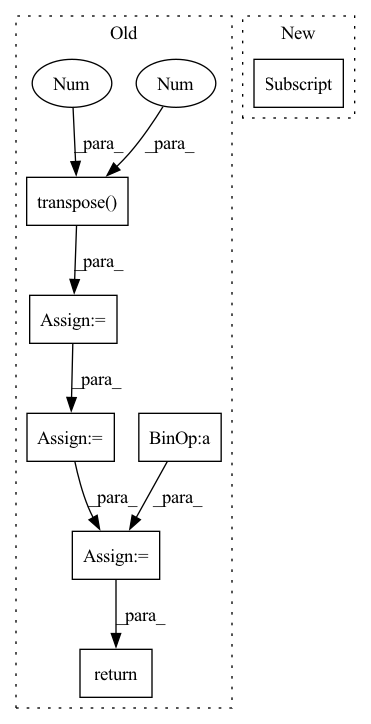

Pattern ID :17726

Before Change
n_chan_out = min(n_chan_ref, n_chan_est)
if n_chan_ref > n_chan_est:
SDR = SDR.transpose(-2, -1)
SIR = SIR.transpose(-2, -1)
SAR = SAR.transpose(-2, -1)
SIR_npy = SIR.cpu().detach().numpy()
SDR_out = SDR.new_zeros(b_shape + (n_chan_out,))
SIR_out = SIR.new_zeros(b_shape + (n_chan_out,))
SAR_out = SAR.new_zeros(b_shape + (n_chan_out,))
p_opts = np.zeros(b_shape + (n_chan_out,), dtype=np.int64)
for m in np.ndindex(b_shape):
dum, p_opt = _linear_sum_assignment_with_inf(-SIR_npy[m])
SDR_out[m] = SDR[m + (dum, p_opt)]
SIR_out[m] = SIR[m + (dum, p_opt)]
SAR_out[m] = SAR[m + (dum, p_opt)]
p_opts[m] = p_opt
p_opts = pt.from_numpy(p_opts).to(SDR_out.device)
return SDR_out, SIR_out, SAR_out, p_opts
def _linear_sum_assignment_with_inf(
After Change
dum, p_opt = _linear_sum_assignment_with_inf(loss_mat_npy[m])
loss_out[m] = loss_mat[m + (dum, p_opt)]
for i, arg in enumerate(args):
args_out[i][m] = arg[m + (dum, p_opt)]
p_opts[m] = p_opt
if return_perm:
In pattern: SUPERPATTERN
Frequency: 3
Non-data size: 7
Instances
Fragment ID: 58391273
Project Name: fakufaku/torchiva
Commit Name: d2b2bceef6944715a6274920e6ec7b0374367ccd
Time: 2022-01-31
Author: robin.scheibler@linecorp.com
File Name: torchiva/metrics.py
M Class Name: AnonimousClass
N Class Name: AnonimousClass
M Method Name: _solve_permutation(1)
N Method Name: _solve_permutation(3)
M Parent Class:
N Parent Class:
M File Name: torchiva/metrics.py
N File Name: torchiva/metrics.py
M Start Line: 204
M End Line: 234
N Start Line: 150
N End Line: 182
'>
Before Change
// b(hc)1q -> bqhc
// print(keys.shape, "keys", values.shape, "values", queries.shape, "queries")
keys = keys.transpose(1, 3)
keys = keys.reshape(keys.shape[:2] + (self.head_count, -1))
// b(hc)1q -> bchq
shape = (batch_count, self.head_count, self.head_dim, -1)
values = values.reshape(shape)
values = values.transpose(1, 2)
queries = queries.reshape(shape)
queries = queries.transpose(1, 2)
// print(keys.shape, "keys", values.shape, "values", queries.shape, "queries")
attention_bias = torch.where(
attention_mask,
torch.zeros([1, 1]),
torch.ones([1, 1]) * (-torch.inf),
)
attention_weights: FloatTensor = torch.einsum(
"bchq,bkhc->bkhq",
queries / self.head_dim ** 0.5,
keys
)
attention_weights += attention_bias[:, :, None, None]
attention_weights = torch.softmax(attention_weights, 1)
// print(attention_weights.shape, "attention_weights")
hidden_state: FloatTensor = torch.einsum(
"bkhq,bchk->bchq",
attention_weights,
values
)
// bchq -> b(hc)1q
// print(hidden_state.shape, "hidden_state")
hidden_state = hidden_state.transpose(1, 2)
hidden_state = hidden_state.reshape(batch_count, self.embed_count, 1, -1)
hidden_state = self.out_proj.forward(hidden_state)
// print(hidden_state.shape, "hidden_state")
return hidden_state
class EncoderSelfAttentionTorch(AttentionTorch):
After Change
attention_weights,
values
)
shape = attention_output.shape[:2] + (self.embed_count,)
attention_output = attention_output.reshape(shape)
attention_output = self.out_proj.forward(attention_output)
return attention_output
'>
Fragment ID: 58391263
Project Name: kuprel/min-dalle
Commit Name: c936d261021f0f38d064e146a2167cf3daeeb0db
Time: 2022-06-27
Author: brkuprel@gmail.com
File Name: min_dalle/models/dalle_bart_encoder_torch.py
M Class Name: AttentionTorch
N Class Name: AttentionTorch
M Method Name: forward(5)
N Method Name: forward(5)
M Parent Class: nn.Module
N Parent Class: nn.Module
M File Name: min_dalle/models/dalle_bart_encoder_torch.py
N File Name: min_dalle/models/dalle_bart_encoder_torch.py
M Start Line: 42
M End Line: 82
N Start Line: 43
N End Line: 61
'>
Before Change
batch_size = target.size(0)
_, pred = output.topk(topk, 1, True, True)
pred = pred.transpose(0, 1)
correct = pred.eq(target.view(1, -1).expand_as(pred))
// TODO: support tuple topk
// res = []
// for k in topk:
// correct_k = correct[:k].reshape(-1).float().sum(0, keepdim=True)
// res.append(correct_k.mul_(100.0 / batch_size))
correct_k = correct[:topk].reshape(-1).float().sum(0, keepdim=True)
res = correct_k.mul_(100.0 / batch_size).item()
return res
class ClsEvaluator(DatasetEvaluator):
After Change
def accuracy(output, target, topk=(1,)):
maxk = min(max(topk), output.size()[1])
batch_size = target.size(0)
_, pred = output.topk(maxk, 1, True, True)
pred = pred.t()
'>
Fragment ID: 58391261
Project Name: oneflow-inc/libai
Commit Name: 371360b9b903675607d2f92544962eb8b2330a17
Time: 2022-02-13
Author: 48727989+rentainhe@users.noreply.github.com
File Name: libai/evaluation/cls_evaluator.py
M Class Name: AnonimousClass
N Class Name: AnonimousClass
M Method Name: accuracy(3)
N Method Name: accuracy(3)
M Parent Class:
N Parent Class:
M File Name: libai/evaluation/cls_evaluator.py
N File Name: libai/evaluation/cls_evaluator.py
M Start Line: 31
M End Line: 49
N Start Line: 28
N End Line: 36